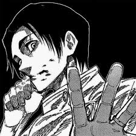

Ryu Ishigori, é um feiticeiro da era passada conhecido por ter a maior produção e saída de energia amaldiçoada da história.
Tempo para completar o objetivo
Yuta Okkotsu é um dos principais feiticeiros de grau especial no universo de Jujutsu Kaisen.
Tempo para completar o objetivo
